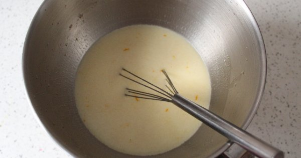
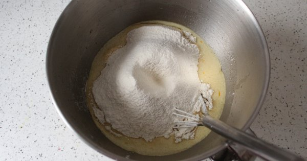
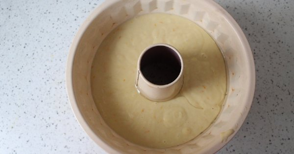
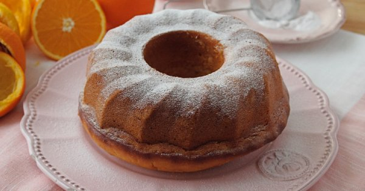

Kıvamı Efsane Olur: Sütsüz Yumurtasız Pamuk Kek Tarifi
anasayfa
tarif gönder
iletişim

Sütsüz Yumurtasız Pamuk Kek Tarifi İçin Malzemeler
1 su bardağı su
3 su bardağı taze sıkılmış portakal
suyu
3 su bardağı un
Sütsüz Yumurtasız Pamuk Kek Tarifi Nasıl Yapılır?
'Aşama 1': Portakalların suyunu sıkın. Kabuklarını rendeleyin.

'Aşama 2': Toz şeker ve portakalı suyunu derince bir kapta güzelce çırpın.

'Aşama 3': Üstüne diğer malzemeleri ekleyip yine güzelce çırpın.

'Aşama 4': Sonra yağlanmış bir kek kalıbına boşaltın.

'Aşama 5': Önceden ısıtılmış 175 derece fırında 40-45 dakika pişirin.
İlk 20 dakika fırının kapağını açmayın ancak sonrasında pişip pişmediğini kürdan testiyle kontrol edebilirsiniz.

'Aşama 6': Keki fırından aldıktan sonra tamamen soğumasını bekleyin
ve sonrasında kalıptan çıkarın. Üstüne ister pudra şekeri serperek
isterseniz de sade olarak servis edin. Afiyet olsun!
©her hakkı saklıdır®